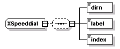

| diagram |  |
| namespace | http://www.cisco.com/AXL/API/10.5 |
| children | dirn label index |
| used by | |
| source | <xsd:complexType name="XSpeeddial"> <xsd:sequence minOccurs="0"> <xsd:element name="dirn" type="axlapi:String255" minOccurs="1" maxOccurs="1"/> <xsd:element name="label" type="xsd:string" minOccurs="1" maxOccurs="1"/> <xsd:element name="index" type="axlapi:XInteger" minOccurs="1" maxOccurs="1"/> </xsd:sequence> </xsd:complexType> |
element XSpeeddial/dirn
| diagram |  |
||||||
| type | axlapi:String255 | ||||||
| properties |
|
||||||
| facets |
|
||||||
| source | <xsd:element name="dirn" type="axlapi:String255" minOccurs="1" maxOccurs="1"/> |
element XSpeeddial/label
| diagram | |||
| type | xsd:string | ||
| properties |
|
||
| source | <xsd:element name="label" type="xsd:string" minOccurs="1" maxOccurs="1"/> |
element XSpeeddial/index
| diagram | |||
| type | axlapi:XInteger | ||
| properties |
|
||
| source | <xsd:element name="index" type="axlapi:XInteger" minOccurs="1" maxOccurs="1"/> |
XML Schema documentation generated by XMLSpy Schema Editor http://www.altova.com/xmlspy